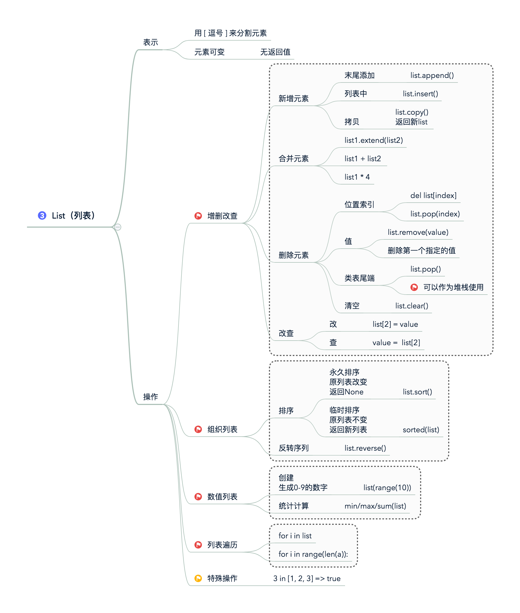
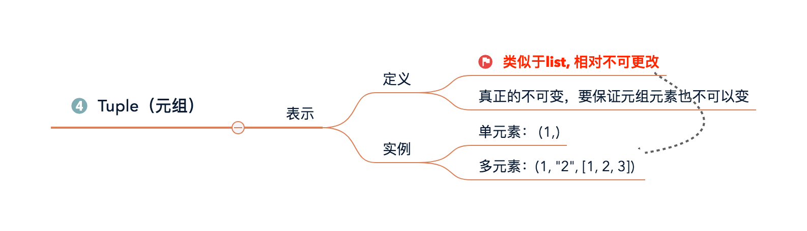
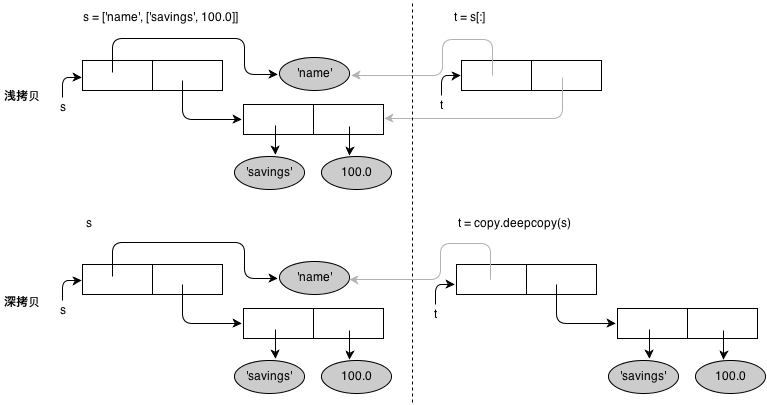

目标
- 对序列对象有整体的认识；
- 掌握list的常用操作
- 掌握tuple的常用操作
- 理解深浅拷贝问题
第一部分 序列对象
1. 了解序列对象
Python一切皆对象。
- 序列对象包含str、list、tuple；
- 序列成员属性：有序，可通过下标访问
先大致预览下列表(list)、元组(tuple)的异同点,后续详细梳理
| 差异点 | 列表 | 元组 |
|---|---|---|
| 表示方法 | 空列表：[] 单元素列表：[1] 多元素列表[1, ‘a’] |
空元组：() 单元素元组：(1,) 多元素元组：(1, ‘a’) |
| 可变性 | 可变 | 不可变 |
| 可操作性 | 支持丰富的操作 | 仅支持序列操作 |
| 可哈希性 | 不可哈希，不能作为字典的关键字 | 可哈希，可以作为字典的关键字 |

第二部分 List
Python的列表是一个有序可重复的元素集合，可嵌套、迭代、修改、分片、追加、删除，成员判断。
从数据结构角度看，Python的列表是一个可变长度的顺序存储结构，每一个位置存放的都是对象的指针。
比如，对于这个列表 alist = [1, “a”, [11,22], {“k1”:”v1”}]，其在内存内的存储方式是这样的：

1. 什么是list?
概念： 逗号分隔的不同的数据项使用方括号括起来即是list;
性质： list元素可变,改变的是原对象
>>> tmpList = [] # 创建一个空列表 |
2. 增删改
以xmind的方式呈现

第三部分 Tuple
类似于list的对象，
类似于list, 相对不可更改
重要的实例
alist = [0, 1, 2, 3, 4, 5, 6, 7, 8, 9] |
类似于list, 相对不可更改
参考：廖雪峰老师博客–使用list和tuple的最后来看一个“可变的”tuple：
>>> t = ('a', 'b', ['A', 'B']) |
这个tuple定义的时候有3个元素，分别是’a’，’b’和一个list。不是说tuple一旦定义后就不可变了吗？怎么后来又变了？
别急，我们先看看定义的时候tuple包含的3个元素：

当我们把list的元素’A’和’B’修改为’X’和’Y’后，tuple变为：

表面上看，tuple的元素确实变了，但其实变的不是tuple的元素，而是list的元素。tuple一开始指向的list并没有改成别的list，所以，tuple所谓的“不变”是说，tuple的每个元素，指向永远不变。即指向’a’，就不能改成指向’b’，指向一个list，就不能改成指向其他对象，但指向的这个list本身是可变的！
绝对不变的元组：必须保证tuple的每一个元素本身也不能变。

第三部分 深浅拷贝
对列表和元组进行拷贝时，默认进行的是 浅拷贝：只拷贝成员对象的引用，而不会拷贝引用指向的成员对象本身。借助于 copy模块 的deepcopy方法，可以实现深拷贝
深拷贝：既拷贝成员对象的引用，又会拷贝引用指向的成员对象本身。
浅拷贝：只拷贝成员对象的引用，而不会拷贝引用指向的成员对象本身
值得注意的是，上述说法并不完全正确：如果成员对象本身是原子类型的（数值、字符串，或者只包含数值或字符串的元组），那么对该成员不会发生真正的深拷贝，即便执行深拷贝动作，内部也只会进行浅拷贝。
浅拷贝和深拷贝的示意图如下：

关于浅拷贝和深拷贝的实际案例，可以参考 《Python核心编程（第二版）》 中的 『6.20』 一节：『*拷贝Python对象、浅拷贝和深拷贝』。
参考链接